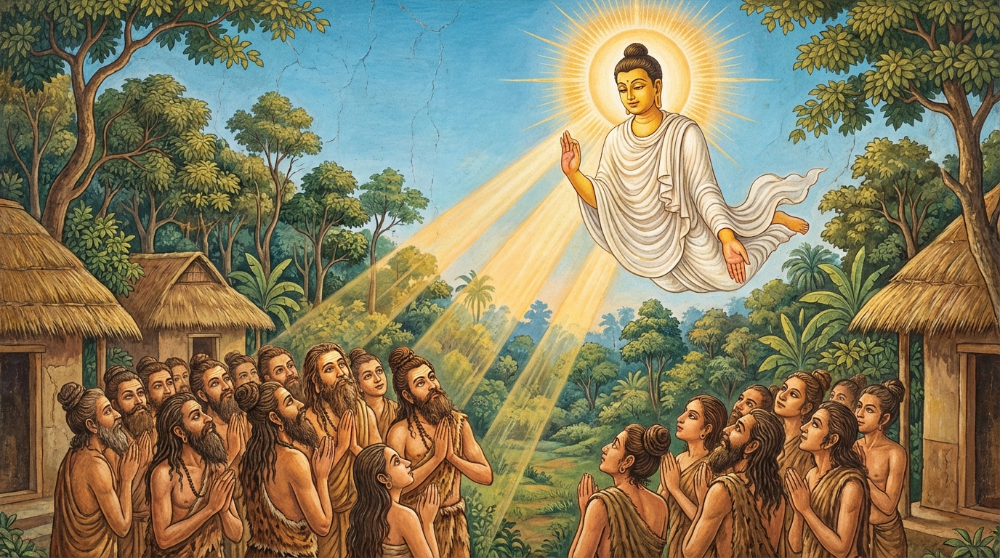

“නුවණ නැති පිරිස සියයකට වඩා රැස්වී, වසර සියයක් මුළුල්ලේ (යම් කරුණක් ගැන) කල්පනා කරමින් සිටිය ද (එයින් පලක් නැත). යමෙක් ප්රකාශිත දෙයෙහි අර්ථය වටහා ගනී ද, නුවණැති ඒ එක ම පුරුෂයා (ඔවුන් සැමට වඩා) ශ්රේෂ්ඨ වේ.”
මේ ජාතක කථාව, කථා පුවතින් ද, විස්තර කථනයෙන් ද, පූර්වාපර සන්ධි ගැලපීමෙන් ද ‘පරෝසහස්ස’ ජාතකය හා සමාන ම වේ. මෙහි වෙනසකට ඇත්තේ ‘ඣායෙය්යුං’ යන පදය පමණි. එහි අර්ථය නම්: ප්රඥාව නැත්තෝ අවුරුදු සියයක් මුළුල්ලේ කල්පනා කරමින් සිටියත්, එනම් බලා සිටියත් හෝ විමසා බැලුවත් යන්නයි. එසේ බලා සිටිය ද ඔවුහු එහි අර්ථය හෝ කාරණය නොදකිති. එබැවින් යමෙක් පැවසූ දෙයෙහි අර්ථය දනී ද, ප්රඥාවන්ත වූ ඒ එක ම පුද්ගලයා ශ්රේෂ්ඨ වේ.
පරෝසත ජාතක වර්ණනාව පළමුවැනියි.

මහා බෝධිසත්ත්වයෝ අහසේ සිට තාපසවරුන්ට ධර්මය දේශනා කිරීම.